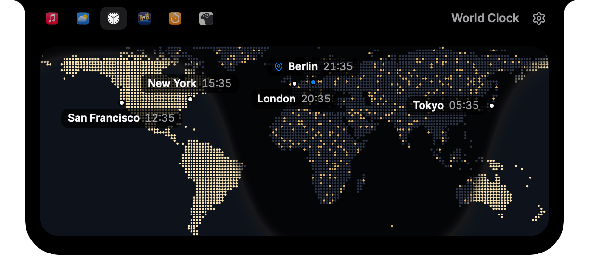
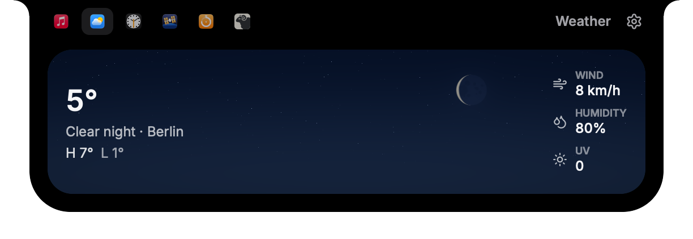
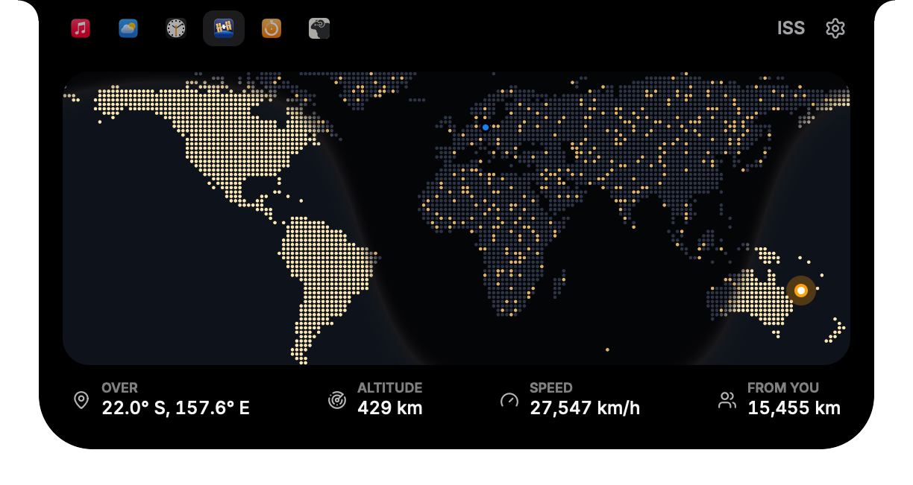
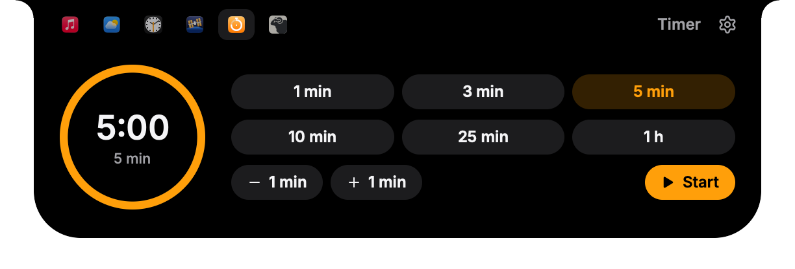
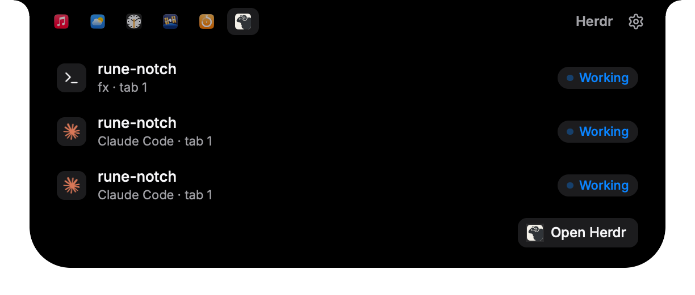
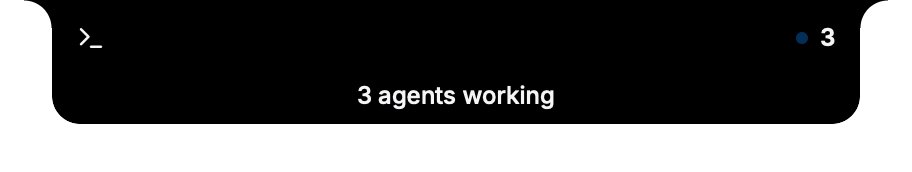

openNook
A Dynamic Island for the MacBook notch where everything it shows is a mod: a few lines of JavaScript you or your coding agent write while it runs.
2.0 alpha · macOS 14+ · older releases





